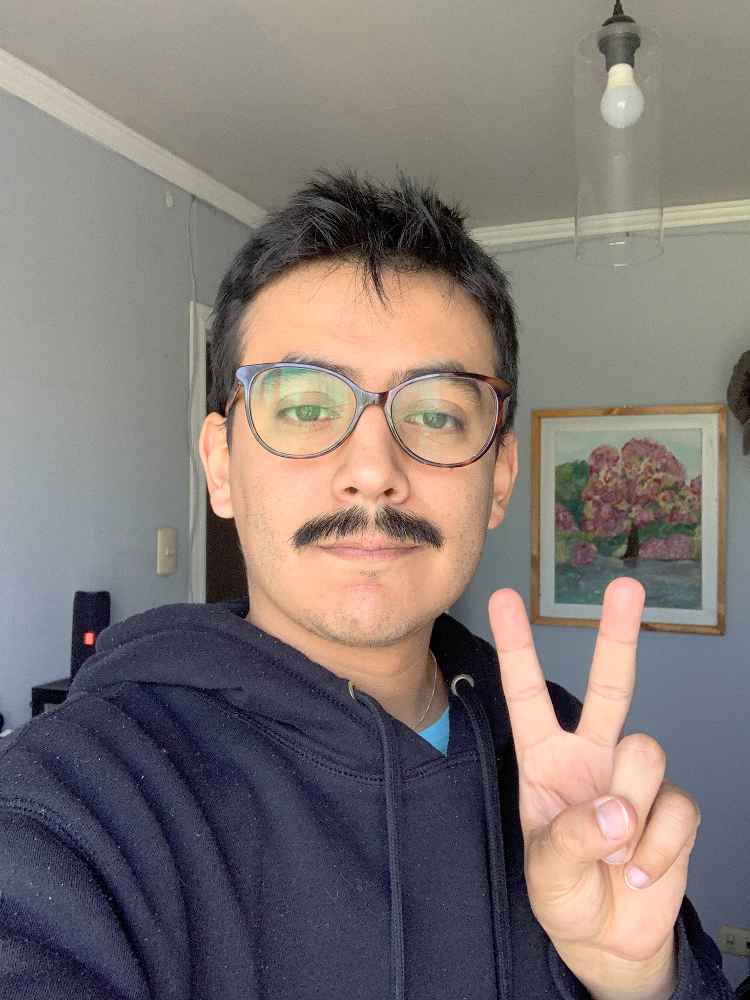

Mi nombre es Diego Vegas, actualmente vivo en Santiago de Chile y mi titulo profesional es tecnico audiovisual en Duoc UC desde el año 2017, a la fecha me desempeño como encagardo de produccion de contenido grafico y audivisual en retail Dreams computacion.
Toda mi enseñansa basica y media la curse en el colegio Madre de Jesus hasta el año 2012, luego de un par de años de trabajo y preuniversitario decidi comenzar mi carrera profesional como audiovisual en el instituto profesional Duoc UC en el año 2014. Lugar que vino a consolidar mis conocimientos previos en el area audiovisual previos. Mis primeros pasos como audiovisual se remontan al año 2006 cuando por primera vez me propuse dirigir y editar un video de skate para dedos.
Para terminar me gustaria dejarlos invitados a mirar mis trabajos a mi canal de youtube